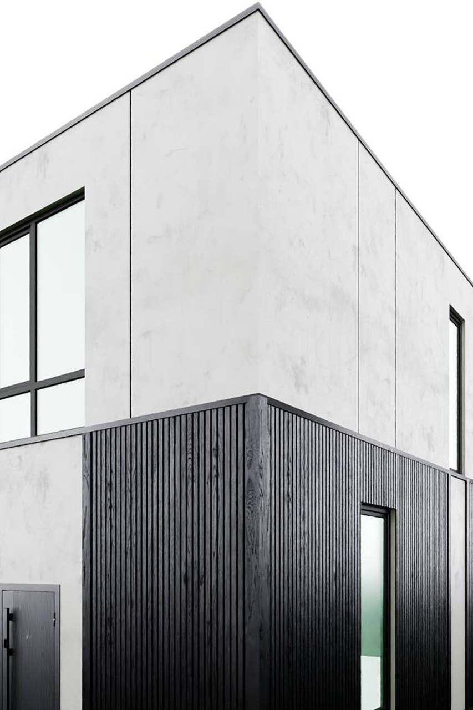
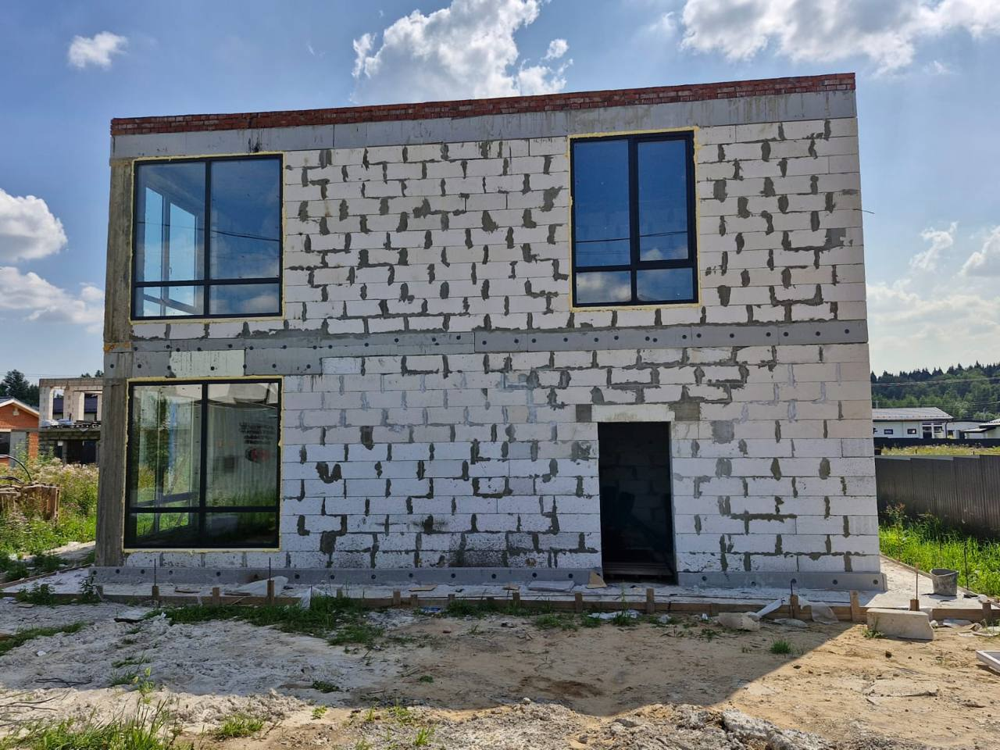
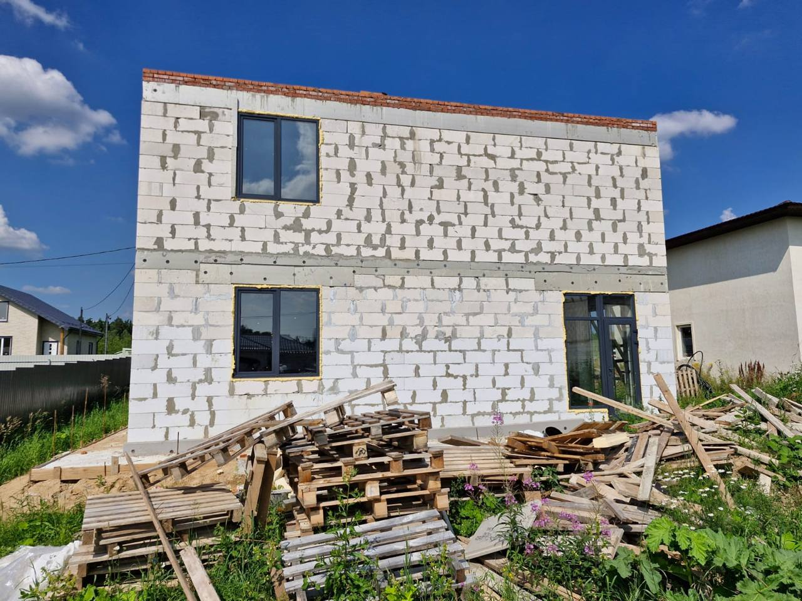

Проект
Частный жилой дом
Компактный частный дом с ясным объемом: светлый верх, темный первый уровень и крупные проемы.
Тип Частный дом
Площадь 170 м²
Локация Московская область, Россия
Статус В реализации


Статус: В реализации
Реальные фотографии фиксируют объем дома в процессе строительства и показывают, как проектная геометрия и пропорции сохраняются в материале.

